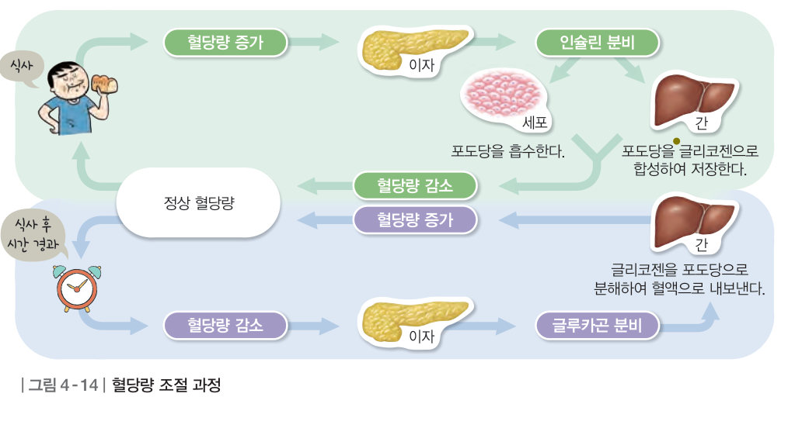
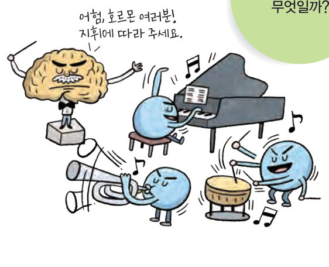
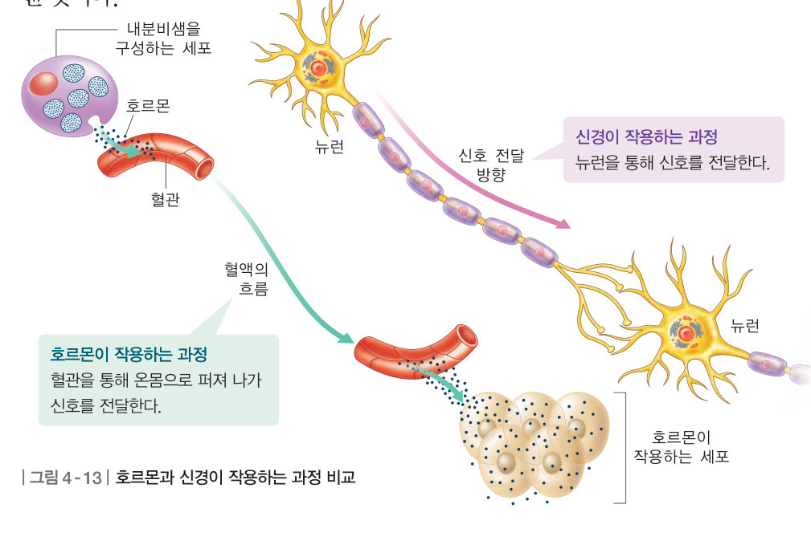
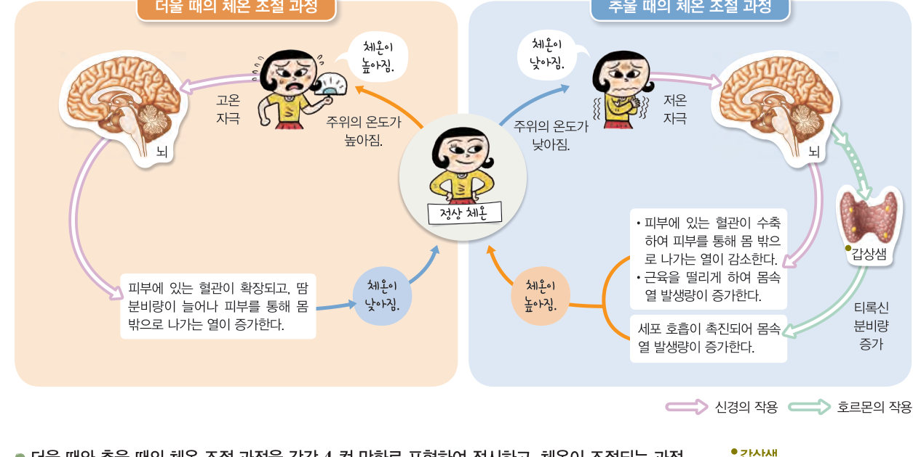
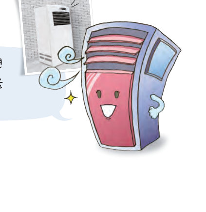

호르몬은 무엇일까? 찜질방 체온 조절기로 더울 때와 추울 때 몸의 반응을 확인하고, 하루 혈당 그래프에서 점심과 축구 뒤 인슐린과 글루카곤이 혈당량을 일정하게 지키는 모습을 지켜보자.
우리 몸은 기온이 변해도 체온을 일정하게 유지한다. 이와 같이 우리 몸은 몸 안팎의 환경이 변해도 적절하게 반응하여 몸의 상태를 일정하게 유지하는 성질이 있는데, 이를 항상성이라고 한다. 항상성은 신경과 호르몬의 작용으로 유지된다.
호르몬은 내분비샘에서 만들어져 특정 세포나 기관으로 신호를 전달하여 몸의 기능을 조절하는 물질로, 종류에 따라 그 역할이 다르다. 호르몬은 내분비샘에서 혈액으로 분비된 다음, 혈관을 통해 온몸으로 이동하여 특정 세포에 작용한다. 따라서 호르몬은 신경에 비해 신호가 천천히 전달되고, 효과가 지속적으로 나타나며, 작용하는 범위가 넓다.

| 신호 전달 방법 | |
| 신호 전달 속도 | |
| 효과의 지속성 | |
| 작용 범위 |

체온이 정상보다 높아지면 뇌에서 신호를 보내 피부에 있는 혈관을 확장하고, 땀 분비량을 늘린다. 그 결과 열이 몸 밖으로 많이 나가서 체온이 낮아진다. (땀이 기화하면서 피부의 열에너지를 흡수한다.) 체온이 정상보다 낮아지면 뇌에서 신호를 보내 피부에 있는 혈관을 수축하고, 몸의 근육을 떨리게 한다. 그 결과 열이 몸 밖으로 적게 나가고, 몸에서 열이 많이 발생하여 체온이 높아진다. 한편, 어린아이는 갑상샘에서 분비하는 티록신의 작용으로 체온을 조절하기도 한다. 체온이 낮아지면 티록신 분비량이 늘어나 세포 호흡이 촉진되고, 몸에서 열이 많이 발생한다.
우리 몸은 체온 외에도 혈당량(혈액 속 포도당의 양, 보통 혈액 100 mL에 70~90 mg)을 일정하게 유지한다. 혈당량 조절 과정에는 이자에서 분비하는 호르몬인 인슐린과 글루카곤이 관여한다. 인슐린은 혈당량을 낮추고, 글루카곤은 혈당량을 높이는 작용을 한다. 식사 후 혈당량이 정상보다 증가하면 이자에서 인슐린이 분비되어 간과 세포에 작용한 결과 혈당량이 감소한다(세포의 포도당 흡수 촉진, 간에서 포도당을 글리코젠으로 합성). 식사 후 시간이 오래 지나 혈당량이 감소하면 이자에서 글루카곤이 분비되어 간에 작용한 결과 혈당량이 증가한다(간에서 글리코젠을 포도당으로 분해).
내분비샘에서 호르몬이 너무 적게 분비되거나 너무 많이 분비되면 질병에 걸릴 수 있다. 예를 들어 이자에서 인슐린이 제대로 분비되지 않으면 당뇨병에 걸린다.
| 조사한 질병 | |
|---|---|
| 관련 호르몬과 특징 | |
| 발병 원인 |
| 평가 기준 | 스스로 평가 |
|---|---|
| 탐구 기능 호르몬과 관련된 질병을 조사하였는가? | |
| 탐구 기능 자신의 의견을 논리적으로 전달하였는가? | |
| 인성 탐구 활동에 적극적으로 참여하였는가? |

| ⑴ 호르몬은 뉴런을 통해 온몸으로 전달된다. | |
| ⑵ 호르몬이 작용하는 범위는 신경에 비해 넓다. | |
| ⑶ 호르몬은 신경에 비해 신호가 빠르게 전달된다. | |
| ⑷ 신경의 작용으로 나타나는 효과보다 호르몬의 작용으로 나타나는 효과가 지속적이다. |
| ⑴ 더울 때는 몸의 근육이 떨려 열 발생량이 증가한다. | |
| ⑵ 피부에 있는 혈관이 확장되면 몸 밖으로 나가는 열이 증가한다. | |
| ⑶ 추울 때는 땀 분비량이 증가하여 몸속의 열이 몸 밖으로 나가는 것을 막는다. | |
| ⑷ 어린아이는 추울 때 갑상샘에서 티록신 분비가 늘어나고, 세포 호흡이 촉진되어 열 발생량이 증가한다. |
| 평가 기준 | 스스로 평가 |
|---|---|
| 호르몬이 몸의 기능 조절에 관여함을 설명할 수 있다. | |
| 호르몬과 신경의 작용으로 항상성이 유지됨을 설명할 수 있다. |